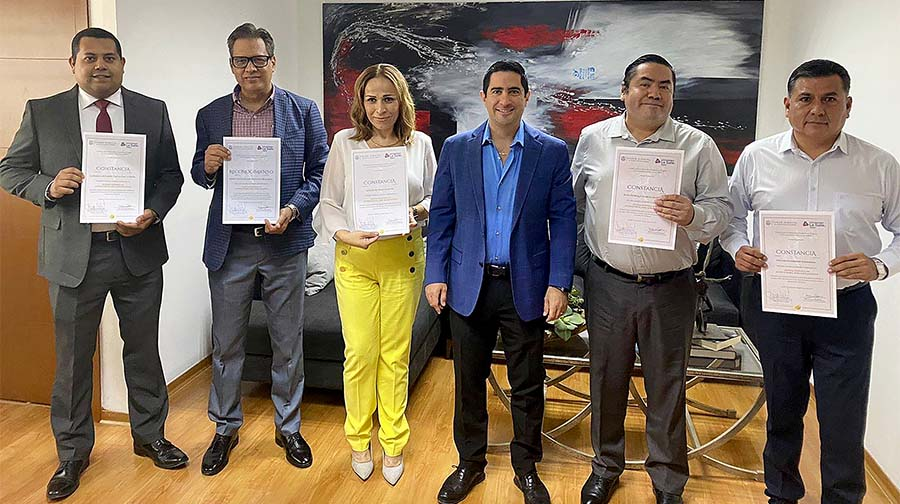

CAPÍTULO 4. JUSTICIA PROFESIONAL
Uno de nuestros grandes objetivos es garantizar a toda persona un servicio profesional en la impartición de justicia. Es nuestra responsabilidad que las y los servidores públicos que integran este poder público cuenten con las herramientas y conocimientos adecuados para el cumplimiento de las tareas que les sean encomendadas.
En este apartado damos cuenta de las acciones en materia de formación y capacitación que hemos ofrecido a nuestro personal a través del Instituto de Especialización Judicial, el cual ha adaptado sus contenidos y la forma de mantener la oferta educativa debido a los retos que enfrentamos hoy en día, valiéndose de las herramientas tecnológicas disponibles.
También mediante la Coordinación Académica y de Servicio Civil de Carrera, del Instituto Estatal de Defensoría Pública, fue posible la actualización de las y los defensores públicos a fin de ofrecer un servicio de asesoría y defensa jurídica profesional y de calidad.
Promovimos el uso de la mediación como un recurso para la resolución de conflictos y propiciar el acceso a una justicia efectiva. Desde el Centro de Medios Alternos de Solución de Controversias (CEMASC) impulsamos la capacitación y certificación en mediación, para que cada vez más personas cuenten con esta valiosa herramienta.
A través de la Unidad de Derechos Humanos e Igualdad de Género del Poder Judicial de Coahuila, durante este año promovimos acciones y políticas públicas en materia de género que sirvieron de base para la prevención, atención y sanción de actos de violencia contra las mujeres, y cualquier acción que atente contra los derechos humanos. Apoyamos la sensibilización y capacitación del personal en temas referentes a la igualdad, la inclusión y la perspectiva de género.
Es fundamental para el desarrollo de nuestras funciones contar con el personal necesario, que sea provisto de las herramientas requeridas para ofrecer a la ciudadanía una justicia eficiente, pues el trabajo, esfuerzo y compromiso de quienes integran esta institución permite lograr una impartición de justicia equitativa, cercana y humana.
INSTITUTO DE ESPECIALIZACIÓN JUDICIAL
Conforme al modelo de justicia que opera en nuestro estado, el cual se rige bajo principios y valores, las personas tienen acceso a una justicia profesional, transparente, medible e innovadora. Una de estas características está enfocada en garantizar la profesionalización de quienes se desempeñan al interior de nuestros órganos jurisdiccionales, no jurisdiccionales y administrativos. En ese sentido, a través del Instituto de Especialización Judicial (IEJ) ofrecemos capacitación permanente a las y los servidores públicos adscritos a este poder, así como a quienes aspiran a seguir la carrera judicial y a aquellos profesionistas que fungen como operadores del sistema de justicia, a fin de contribuir al desarrollo de sus habilidades y competencias que permitan asegurar una impartición de justicia con los más altos estándares de calidad.
En 2021, de acuerdo al Diagnóstico de Necesidades de Capacitación, el cual se realizó a principios del año a través de una encuesta en línea en la que participaron 871 personas, enfocamos las actividades del IEJ, el diseño curricular y la programación de eventos académicos en tres grandes objetivos:
- a) La capacitación continua.
- b) El desarrollo institucional.
- c) La capacitación especializada.
Basados en esos tres rubros, las acciones realizadas para impulsar la capacitación y profesionalización de magistradas y magistrados, juezas y jueces, secretarias y secretarios, así como de servidoras y servidores actuariales, de defensoría pública y de mediación, y demás personal administrativo, se vieron reflejadas en la celebración de 51 actividades académicas en las que participaron dos mil 512 personas, de las cuales mil 412 pertenecen al Poder Judicial (65 por ciento mujeres y 35 por ciento hombres) y mil 100 a otras dependencias públicas, así como abogados litigantes.
Tabla 29. Personas capacitadas por el Instituto de Especialización Judicial 2019 y 2021
| Año | Cantidad |
|---|---|
| 2019 | 3,782 |
| 2021 | 2,512 |
Fuente: Instituto de Especialización Judicial. Poder Judicial del Estado de Coahuila de Zaragoza. 2021.
Desde comienzos del 2020, la pandemia originada por el COVID-19 nos impulsó a la sociedad en general a generar cambios en los procesos de enseñanza y aprendizaje, por lo que comenzamos a asumir la educación en un contexto digital, poniendo en el centro el desarrollo de competencias y el aprendizaje integral. En ese sentido, en el Poder Judicial continuamos fortaleciendo de manera importante el uso de herramientas digitales en la capacitación y profesionalización, dando como resultado que durante el año que se reporta más del 90 por ciento de las actividades fueron realizadas a través de estos medios.
a) Capacitación continua
En el rubro de la capacitación continua, durante este año llevamos a cabo el diseño y la producción de dos cursos a distancia, con modalidad en línea, a través del Sistema de Capacitación y Profesionalización que utiliza la plataforma Moodle, de los cuales en próximas fechas se iniciará el proceso de registro y participación. Lo anterior, en coordinación con el Instituto de Especialización Judicial, la Dirección de Innovación de la Oficialía Mayor y la Secretaría Técnica y de Transparencia de la Presidencia del Tribunal Superior de Justicia.
El primero de ellos es el curso de Actuación Policial, Justicia Cívica y Proximidad Social con Perspectiva de Género, con la participación de un equipo de trabajo multidisciplinario –entre el Poder Judicial y el Gobierno del Estado de Coahuila– y a través de la Secretaría de Seguridad Pública. Su objetivo es impulsar y fortalecer la formación de los elementos de las corporaciones policiales, diseñado en 13 módulos, con una duración de 52 horas a través de videos, exámenes y actividades prácticas. El programa educativo se encuentra avalado por la Universidad La Salle Saltillo, institución que cuenta con prestigio y alto nivel educativo. El claustro docente que participó estuvo integrado por 15 personas de alta capacidad en el ejercicio académico y profesional, quienes son funcionarios de diferentes órganos: Poder Judicial del Estado, Secretaría de Seguridad Pública, Fiscalía General de la República, Fiscalía General del Estado, Subsecretaría de Prevención y Participación Ciudadana de la Secretaría de Gobierno, Unidad de Integración Familiar del DIF Saltillo y Universidad Autónoma de Coahuila.
Mientras que el segundo es en materia de medios alternos de solución de controversias, cuyo contenido se divide en ocho módulos con una duración de 21 horas de exposición a través de videos y actividades prácticas. En este participan como docentes las y los facilitadores y mediadores del Centro de Medios Alternos de Solución de Controversias del Poder Judicial.
También, durante 2021 nos permitimos reforzar el trabajo colaborativo interinstitucional, a través de la continuación de alianzas estratégicas con organizaciones públicas y de la sociedad civil como: Suprema Corte de Justicia de la Nación; Casa de la Cultura Jurídica de la Suprema Corte de Justicia de la Nación, con sede en Saltillo; Red de Escuelas Judiciales de los Estados de la República Mexicana; secretarías de Seguridad Pública y de Medio Ambiente del Gobierno del Estado; Fiscalía General del Estado; Subsecretaría de Prevención y Participación Ciudadana de la Secretaría de Gobierno; Unidad de Integración Familiar del DIF Saltillo; Universidad Autónoma de Coahuila; Universidad La Salle; Universidad Autónoma del Noreste; y la organización civil Documenta, lo que nos permitió ofertar capacitaciones en diversas ramas del conocimiento, que propiciaron la consolidación de una cultura de especialización en las y los servidores públicos del Poder Judicial.
En ese sentido, en coordinación con la Casa de la Cultura Jurídica de la Suprema Corte de Justicia de la Nación, con sede en Saltillo, llevamos a cabo el seminario Etapa de juicio en el Sistema Penal Acusatorio, capacitación en la que participaron 51 personas; y, en materia laboral, realizamos el seminario Conciliación en materia de justicia laboral, en la que recibieron capacitación 47 funcionarios.
De igual forma, a través de la Dirección General de Derechos Humanos de la Suprema Corte de Justicia de la Nación, 71 funcionarios del Poder Judicial participaron en el programa de capacitación dirigida a las personas juzgadoras, cuyo principal objetivo fue difundir criterios jurisprudenciales y estándares internacionales en temas relacionados con perspectiva de género, derechos de las personas LGBTI, y derechos económicos, sociales, culturales y ambientales, entre otros.
Asimismo, en alianza con la Secretaría de Medio Ambiente del Gobierno del Estado, en el mes de abril se llevó a cabo el curso sobre la Ley de Responsabilidad Ambiental, en el cual participaron18 funcionarios jurisdiccionales.
Del mismo modo, durante los meses de octubre, noviembre y diciembre se realizaron diversas actividades de la Red de Escuelas Judiciales de los Estados de la República Mexicana, como el Coloquio de Interpretación y Razonamiento Jurisdiccional, el 5° Congreso Nacional de Educación Judicial: Retos y Desafíos, y la Onceava Reunión de la Red de Escuelas Judiciales, actividades en las que se compartieron las profundas transformaciones en el sistema jurídico mexicano en las últimas décadas, especialmente a través de la reforma en materia de Derechos Humanos, que han implicado, entre otros aspectos, que la interpretación y argumentación cobren un papel más significativo en la práctica del derecho y especialmente en la función jurisdiccional; las tendencias en formación de carrera judicial; el desafío de la educación judicial en el enfoque de la educación a distancia; pandemia y transición educativa; y las estrategias de aprendizaje en la enseñanza judicial, derechos humanos y justicia laboral; así como los resultados en la implementación de los medios tecnológicos en la enseñanza y aprendizaje. En dichas actividades participaron 26 funcionarios judiciales.

b) Desarrollo institucional
En el ámbito de desarrollo institucional, los temas de ética pública, derechos humanos y perspectiva de género han sido transversales para la elaboración de nuestros programas, con el objetivo de fomentar entre el personal una mejora continua de la administración e impartición de justicia. Por lo anterior, y como parte de la formación integral y constante de las y los funcionarios jurisdiccionales y administrativos, en 2021 realizamos cursos con los temas de comunicación asertiva y ética en el servicio público, en los cuales participaron 367 personas.
Como parte del programa que hemos seguido para la certificación ISO 9001 y 30301, llevamos a cabo la capacitación sobre el Sistema Integral de Calidad y Gestión Documental, en la que participaron 14 integrantes de diversas áreas como las direcciones de Recursos Humanos, Recursos Financieros, Recursos Materiales, Infraestructura e Informática de la Oficialía Mayor del Poder Judicial, así como también de la Visitaduría Judicial General, la Unidad de Apoyo a lo Jurisdiccional, el Archivo Judicial General, la Secretaría Técnica y de Transparencia de la Presidencia del Tribunal Superior de Justicia y el Instituto de Especialización Judicial.
De igual forma, a través de la Dirección de Innovación, el personal del Instituto de Especialización Judicial participó en el curso sobre el uso de las tecnologías en la educación, y en el Sistema de Capacitación y Profesionalización (SICAP) que utiliza la plataforma Moodle.
También durante 2021, a fin de dar cumplimiento con lo establecido en la Ley Orgánica del Poder Judicial del Estado de Coahuila de Zaragoza, respecto al examen de méritos –consistente en la evaluación de conocimientos– y los indicadores de capacidad profesional, aptitud y actitud para el cargo, conducta profesional, fama pública y antecedentes laborales de quienes pretendan ingresar a la carrera judicial, trabajamos en el fortalecimiento de los criterios de validez y confiabilidad, así como en el diseño, metodología y aplicación de los mismos.
De igual modo, como parte de este rubro y con el objetivo de fortalecer las actividades del IEJ, fue aprobado por el Consejo de la Judicatura el Acuerdo C-143/2021, a través del cual se realiza una reforma al Reglamento Interior del Instituto de Especialización Judicial, a fin de establecer la integración del Consejo Académico en el que participan magistradas y magistrados, juezas y jueces, y personas pertenecientes a organismos de la sociedad civil y de la academia en el estado. Dicho Consejo Académico se integra con el objetivo de coadyuvar en la planeación, diseño y elaboración de los programas académicos de formación, capacitación y actualización del personal y de quienes aspiren a formar parte de este poder público, además de participar en el diseño y en la evaluación de los ya mencionados exámenes de méritos.
c) Capacitación especializada
En lo que respecta a este rubro, y en seguimiento a los lineamientos y estándares de implementación del Programa Nacional de Juicios Orales Mercantiles elaborado por la Comisión Nacional de Mejora Regulatoria (CONAMER), impartimos el Curso de Oralidad Mercantil a magistradas, magistrados, juezas, jueces, secretarias, secretarios, y a personal actuarial y de defensoría pública. Esta actividad les permitió reforzar habilidades y destrezas para el correcto desarrollo de la función jurisdiccional en materia de oralidad mercantil, lo que permite atender la necesidad de dar solución ágil a los conflictos que genera la convivencia diaria en una sociedad, en especial los relacionados con transacciones mercantiles. A través de esta y otras acciones de mejora regulatoria, que aseguran una impartición de justicia de calidad, pronta y expedita en materia mercantil, logramos la certificación en el Programa Nacional de Juicios Orales Mercantiles.
También, de conformidad con la Ley Nacional del Sistema Integral de Justicia Penal para Adolescentes, que estipula que las personas o autoridades que intervengan en procedimientos donde se encuentre involucrado un adolescente deberán estar capacitadas y especializadas, nos dimos a la tarea de continuar con la preparación en la materia. Este año llevamos a cabo la tercera edición del diplomado Sistema integral de justicia penal para adolescentes, con la colaboración de la Universidad La Salle Campus Saltillo, donde logramos la acreditación de 57 funcionarios judiciales.
En el mismo contexto, para fortalecer las capacidades y conocimientos en materia de prevención, investigación y sanción de la tortura, así como la forma de cumplir con la normatividad nacional y las obligaciones internacionales que derivan de los diversos instrumentos internacionales suscritos y ratificados por el Estado Mexicano, en el mes de noviembre, en alianza estratégica con la organización civil Documenta, iniciamos el curso Prevención, investigación y sanción de la tortura, desde la perspectiva del derecho penal, procesal penal y de los derechos humanos, en el cual participan 26 funcionarias y funcionarios jurisdiccionales.
En la importante labor de apoyo a la actividad jurisdiccional, se destaca la actividad que realizan las y los actuarios y notificadores. Su función no es solo ser portadores de los comunicados que el juzgador dirige a las personas o autoridades que se ven vinculadas a un procedimiento judicial, sino que son el reflejo vivo de la institución a la cual prestan sus servicios frente a la sociedad, por lo que ofrecimos un curso de capacitación y actualización para ellos, en donde se abordaron temas relacionados con principios éticos y constitucionales, entre otros, para el óptimo desempeño de sus funciones. Esta actividad académica fue acreditada por 135 personas, lo que representa más del 91 por ciento del total de ese personal.
También, derivado de la alianza estratégica entre este Poder Judicial y la Universidad Autónoma del Noreste, iniciamos el Diplomado en Medios Alternos de Solución de Controversias en sede judicial, el cual se trata de una capacitación especializada en la que participan 69 personas, entre personal jurisdiccional, administrativo, y mediadoras y mediadores, lo que indudablemente favorecerá a la aplicación de la conciliación y mediación en la sociedad como parte de la justicia alternativa.
En este ámbito de formación en materia de medios alternos de solución de controversias, en coordinación con el Instituto de Especialización Judicial y el Centro de Medios Alternos de Solución de Controversias del Poder Judicial continuamos con la promoción de la cultura de la paz, a fin de propiciar el cambio de una visión competitiva por una de colaboración, como una opción distinta a la judicial para solucionar los conflictos interpersonales bajo los principios de voluntariedad, confidencialidad, flexibilidad, imparcialidad y gratuidad. De esta forma, mediante 12 actividades académicas –entre cursos y talleres– sensibilizamos a 509 personas en las bondades que ofrecen estos medios no adversariales.
Aunado a lo anterior, consideramos importante la difusión que se hace de la cultura jurídica. Por ello, con la finalidad de generar un espacio de aprendizaje y de coadyuvar en la formación profesional de estudiantes en las disciplinas relacionadas con la función jurisdiccional, dentro del marco del convenio de colaboración entre el Poder Judicial y la Universidad La Salle Campus Saltillo, durante febrero, marzo y abril llevamos a cabo estadías a través de las cuales 23 estudiantes de la licenciatura en derecho tuvieron pláticas en línea con servidores públicos adscritos a diversos órganos administrativos, así como con titulares de Juzgados de Primera Instancia en Materia Familiar y del Tribunal de Conciliación y Arbitraje. Con esto, los alumnos pudieron conocer sobre el desempeño de las labores jurisdiccionales que se realizan.
Además, atendiendo las necesidades de actualización continua de los agentes jurídicos que participan en los procedimientos judiciales, realizamos cursos dirigidos a abogados postulantes en temas como: boleta electrónica, oralidad mercantil, audiencia inicial y audiencia intermedia, estos últimos con la colaboración de docentes profesionales del derecho del Instituto Estatal de Defensoría Pública. En estas actividades académicas participaron 674 abogadas y abogados postulantes, de nuestra entidad y de otras partes del país, que han recibido capacitación del Instituto de Especialización Judicial; lo cual da cuenta del interés que despiertan, por su calidad, nuestros programas académicos.
COORDINACIÓN ACADÉMICA Y DE SERVICIO CIVIL DE CARRERA DEL INSTITUTO ESTATAL DE DEFENSORÍA PÚBLICA
En este rubro, como un área de oportunidad en la forma de trabajar, adoptamos el uso de nuevas herramientas tecnológicas como Facebook, Zoom, Google Meet y Webinar, que nos permitieron continuar con los cursos y capacitaciones para el personal del Instituto Estatal de Defensoría Pública (IEDP), así como con los cursos que brindamos en coordinación con otras instancias.
El personal de la Unidad de Defensa Penal del IEDP impartió, en modalidad virtual, un curso-taller sobre audiencia intermedia dirigido a profesionales del derecho, con una asistencia de 179 abogados.
Continuando con la visión de informar, orientar y dar a conocer temas jurídicos trascendentales y de impacto en la ciudadanía, llevamos a cabo una campaña de asesorías jurídicas dirigida al público en general, en la que personal de la Unidad de Asistencia Administrativa y Asesoría Jurídica, en coordinación con la Comisión para la Instrumentación del nuevo Sistema de Justicia Penal en Coahuila, impartió temas de interés como alimentos, el divorcio y el pagaré
Tabla 30. Cursos impartidos por personal del IEDP a abogados particulares
| Curso | Duración | Fecha | Participantes |
|---|---|---|---|
| Audiencia inicial | 40 horas / 20 horas | Del 1 al 12 de marzo / Del 16 al 26 de marzo | 261 |
| Audiencia intermedia | 40 horas | 17, 19, 24 y 26 de agosto | 179 |
| Campaña de información y asesorías jurídicas | 12.5 horas | 5, 12, 19 y 26 de marzo y 2 de abril | 64 |
| Total de asistentes | 504 |
Fuente: Instituto Estatal de Defensoría Pública. Poder Judicial del Estado de Coahuila de Zaragoza. 2021.
Durante los meses de marzo a mayo impartimos, de manera presencial y virtual, el Diplomado en Sistema Integral de Justicia para Adolescentes, dirigido a las y los defensores públicos, asesores jurídicos y litigantes particulares encargados e interesados en brindar el servicio de atención a los menores infractores.
Este año gestionamos el intercambio de programas académicos con diversas instancias, como la Casa de la Cultura Jurídica de la Suprema Corte de Justicia de la Nación, con sede en Saltillo; Defensorías Públicas de otras entidades; y JAVA, como filial de USAID-ProJusticia, entre otros. Derivado de lo anterior, se capacitó a 134 personas de nuestra Institución.
Tabla 31. Capacitación al personal del IEDP
| Curso | Participantes |
|---|---|
| Curso en oralidad mercantil | 8 |
| Diplomado justicia para adolescentes | 22 |
| Curso-taller en mediación | 37 |
| Conciliación en Materia Laboral | 3 |
| Simposio regional en actualización de perspectiva de género para personas operadoras jurídicas | 29 |
| Ética en el servicio público | 24 |
| Juicio Oral Familiar y sus controversias | 5 |
| Diplomado mecanismos alternativos de solución de controversias en sede judicial | 4 |
| Juicio de amparo | 2 |
| Total | 134 |
Fuente: Instituto Estatal de Defensoría Pública. Poder Judicial del Estado de Coahuila de Zaragoza. 2021.
CAPACITACIÓN EN MEDIOS ALTERNOS DE SOLUCIÓN DE CONTROVERSIAS
En este período logramos también la realización de 23 cursos de capacitación en mediación, con los que formamos y actualizamos a 911 personas, entre servidores públicos de distintas dependencias, personal adscrito al Poder Judicial, y abogadas y abogados litigantes en los ocho distritos judiciales de Coahuila.
Participamos de manera directa en el cumplimiento a diversos convenios de colaboración suscritos por el Poder Judicial con otras instancias públicas, a fin de fortalecer los medios alternos. Así, logramos la capacitación de 29 personas adscritas a la Subsecretaría de Prevención Social de la Violencia y la Delincuencia, perteneciente a la Secretaría de Gobierno del Estado; de 80 elementos de la Secretaría de Seguridad Pública del Estado y de la Guardia Nacional; de 25 personas de los Centros Comunitarios del Municipio de Saltillo, de las cuales 14 lograron su certificación correspondiente; y de 11 jueces calificadores. Finalmente, capacitamos y certificamos a 120 personas en colaboración con la Secretaría de Educación del Estado.
CERTIFICACIÓN EN MEDIACIÓN Y CONCILIACIÓN
En 2021 dimos seguimiento a los procesos de certificación en materia de mediación y conciliación a servidores públicos del Poder Judicial y de otras dependencias públicas. Fueron en total tres procesos ordinarios y dos extraordinarios, que se realizaron de manera virtual y en los que se registraron 428 personas interesadas de todo el estado. De esa cantidad, 273 lograron obtener la certificación de manera satisfactoria, una vez cubiertos los requisitos establecidos en las convocatorias correspondientes.
Además, trabajamos en colaboración con el Instituto de Especialización Judicial y la Dirección de Informática de la Oficialía Mayor, a fin de dar cumplimiento al Acuerdo 047/2021 emitido por el Consejo de la Judicatura del Poder Judicial del Estado, para la creación y elaboración del Curso de Mediación, impartido totalmente en línea a través de la plataforma SICAP, el cual ya se encuentra próximo a iniciar.
UNIDAD DE DERECHOS HUMANOS E IGUALDAD DE GÉNERO
En el Poder Judicial de Coahuila estamos comprometidos a impulsar políticas públicas de género que apoyen a la prevención, atención y sanción de la violencia contra las mujeres y los Derechos Humanos, para avanzar hacia una sociedad más justa y con igualdad de oportunidades. Para ello, contamos con la Unidad de Derechos Humanos e Igualdad de Género, desde la cual apoyamos en la creación, seguimiento y capacitación de programas enfocados en la materia.
En marzo firmamos el convenio 3 de 3 contra la Violencia de Género, en colaboración con el Instituto Electoral de Coahuila, a fin de establecer un mecanismo que garantice a la ciudadanía que las personas que se estén postulando para ocupar algún cargo de elección popular no hayan incurrido en actos, u omisiones, que violenten o afecten negativamente a una mujer debido a su género. En el Poder Judicial nos comprometimos a expedir constancias que acrediten que no existe, dentro de nuestros registros, una sentencia ejecutoriada en la que hayan sido sancionadas o condenadas las personas candidatas, por cualquiera de las siguientes razones:
- a) Violencia familiar o doméstica, o cualquier agresión de género en el ámbito privado o público.
- b) Delitos sexuales, contra la libertad sexual o la intimidad corporal.
- c) Ser persona condenada o sancionada como deudor alimentario moroso por atentar contra dichas obligaciones, salvo que acredite estar al corriente del pago o que cancele en su totalidad la deuda, y que no cuente con registro vigente en algún padrón de deudores alimentarios.
Para conmemorar el Día Internacional de la Mujer, el pasado 8 de marzo difundimos en nuestras redes sociales videos testimoniales de mujeres que laboran en este Poder Judicial, en los que compartieron su experiencia y trayectoria laboral.
También, en atención a una de las principales demandas sociales que se presentan hoy en día, colaboramos con instituciones como el Banco Nacional de Datos e Información sobre Casos de Violencia contra las Mujeres (BANAVIM), al cual rendimos trimestralmente un informe estadístico. También colaboramos con el Instituto Nacional de las Mujeres (INMUJERES) a través del programa de Justicia Itinerante, que tiene como objeto brindar acompañamiento jurídico a las mujeres en situación de vulnerabilidad que son parte en procedimientos jurisdiccionales, y que requieren una atención efectiva para la agilización de los procedimientos para su pronta resolución y conclusión. El Poder Judicial de Coahuila fue el primer estado en sumarse a dicho programa con el fin de crear buenas prácticas e invitar al resto de las entidades federativas a adherirse a este propósito.
En marco del Día Internacional de la Eliminación de la Violencia contra la Mujer, participamos en la mesa de trabajo denominada El acceso a la justicia y la erradicación de la violencia. Sentencias y estándares relevantes. Espacio que nos permitió compartir una perspectiva local en la resolución de sentencias relevantes, junto a la importancia de contar con Juzgados Especializados en Materia de Violencia Familiar.
En este sentido, el día 25 de cada mes compartimos en nuestras redes sociales videos cortos con temas relevantes sobre la eliminación de la violencia, la perspectiva de género, la violencia psicológica y la labor de los juzgados especializados, entre otros.
Hoy en día buscamos reflejar cero tolerancia a la violencia, y la promoción de una cultura de igualdad de oportunidades con estricto respeto a los Derechos Humanos, desde el interior de nuestra institución. Por ello trabajamos de manera coordinada desde el ámbito administrativo y jurisdiccional, con actividades como la firma del Pacto por la Igualdad y el Acceso a las Mujeres a una Vida Libre de Violencia, y de la Alianza para poner fin a la violencia contra las mujeres, ambos signados en fechas conmemorativas de temas de género. En estas actividades participamos activamente a través de la Unidad de Derechos Humanos e Igualdad de Género, así como de la Comisión de Igualdad de Género integrada por las magistradas María Eugenia Galindo Hernández, María del Carmen Galván Tello y María Luisa Valencia García. Asimismo, participamos en el foro de la Iniciativa Spotlight, en el panel denominado Estadísticas mínimas para identificar el alcance de las acciones encaminadas a las sanciones de casos de violencia contra mujeres y niñas.
Impulsamos el otorgamiento de las licencias de paternidad, donde concedemos 10 días hábiles con goce de sueldo al personal masculino en caso de nacimiento o adopción de una hija o hijo, con la posibilidad de extenderse cinco días hábiles más en caso de riesgo de salud de la madre o el menor.
Además, promovimos la construcción de las salas de lactancia en los Distritos Judiciales de Monclova y Sabinas, y el mantenimiento de la sala en Saltillo, para ofrecer un espacio privado para el personal y las usuarias que estén en proceso de lactancia.
Estas acciones nos permiten fomentar la corresponsabilidad en el ámbito familiar y la integración laboral de ambos padres después del nacimiento o adopción de sus hijas e hijos, reconociendo la igualdad de ambas personas en sus roles de crianza.
Con el propósito de sensibilizar y concientizar a las y los servidores públicos de forma integral en temas de género y Derechos Humanos, llevamos a cabo cursos sobre las nuevas masculinidades y violencia de género. Bajo ese contexto, nos dimos a la tarea de actualizar el micrositio de la Unidad de Derechos Humanos e Igualdad de Género que se encuentra dentro de la página institucional, el cual sirve de apoyo para el personal jurisdiccional y público en general para consultar jurisprudencias, tesis y sentencias relevantes en temas de género y Derechos Humanos, entre otros contenidos.
Como parte de la actualización a este sitio web se encuentra la habilitación del apartado para presentar quejas por hostigamiento y acoso sexual o laboral, que pudieran suscitarse en nuestros centros de trabajo. En dichas situaciones, mediante la Unidad de Derechos Humanos e Igualdad de Género, realizamos la investigación y seguimiento a la queja, e informamos al Consejo de la Judicatura para la aplicación de la sanción correspondiente.
Este año trabajamos en el diseño del Registro Estatal de Personas Generadoras de Violencia Familiar, Sexual y de Género, como mecanismo efectivo de prevención y protección para atender el factor de reincidencia y repetición de conductas de violencia, en favor de las víctimas o posibles víctimas, el cual será público y difundido en el portal en internet de este Poder Judicial en 2022.
También trabajamos sobre la presentación del libro blanco, el cual se difundirá en el primer aniversario de los Juzgados Especializados en Violencia Familiar contra la Mujer, para compartir nuestro modelo con el resto de los poderes judiciales locales y que puedan replicar esta práctica.
RECURSOS HUMANOS
Contar con el personal suficiente para el desarrollo de nuestra labor es un objetivo predominante en el Poder Judicial. El trabajo, esfuerzo y compromiso de quienes integran esta institución permite lograr una impartición de justicia equitativa, cercana y humana.
Este año contamos con una plantilla de personal activo de mil 758 personas, de las cuales 64 por ciento son mujeres y 36 por ciento hombres, mismas que se desempeñan en órganos jurisdiccionales, no jurisdiccionales y administrativos.
El personal que conforma este Poder Judicial se distribuye de la siguiente manera: mil 546, es decir el 88 por ciento, se desempeñan en algún órgano jurisdiccional; mientras que 212, que corresponden al 12 por ciento, están adscritos a órganos administrativos.
Tabla 32. Distribución del personal del PJECZ según su adscripción
| Adscripción | 2021 | % | H | % | M | % |
|---|---|---|---|---|---|---|
| Personal Jurisdiccional | 1,546 | 88 | 511 | 33 | 1035 | 67 |
| Personal Administrativo | 212 | 12 | 123 | 58 | 89 | 42 |
Fuente: Dirección de Recursos Humanos de la Oficialía Mayor. Poder Judicial del Estado de Coahuila de Zaragoza. 2021.
MOVIMIENTOS DE PERSONAL
Como parte de nuestra planeación en la administración de recursos humanos, llevamos a cabo movimientos de personal para cubrir las necesidades detectadas, promociones de acuerdo al desempeño de las y los servidores públicos, y ratificaciones de adscripción o reubicaciones, según se requiera.
Este año realizamos 339 movimientos con motivo de nombramientos definitivos e interinos, de personal de nuevo ingreso, promociones definitivas y temporales, y cambios de adscripción. Estos movimientos corresponden a: 22 personas, entre jueces y juezas de primera instancia; 69 secretarios y secretarias de acuerdo; 36 personas con función actuarial; 21 personas dedicadas a la defensoría o asesoría jurídica; y 188 personas dedicadas a labores administrativas y de apoyo.
Tabla 33. Movimientos de personal
| Tipo de movimiento | Tipo de designación | Tipo de cargo | Cantidad |
|---|---|---|---|
| Suplencia externa | Definitiva | Judicial y Administrativo | 95 |
| Suplencia externa | Interina sujeta a una temporalidad | Judicial y Administrativo | 27 |
| Suplencia externa | Interina hasta en tanto se realice el debido procedimiento de selección | Judicial | 24 |
| Promoción | Interina sujeta a una temporalidad | Judicial y Administrativo | 10 |
| Promoción | Definitiva | Judicial y Administrativo | 14 |
| Promoción | Interina hasta en tanto se realice el debido procedimiento de selección | Judicial | 53 |
| Reelección | Personal con cargo jurisdiccional | Judicial | 5 |
| Cambio de adscripción | Personal con cargo jurisdiccional | Judicial | 58 |
| Cambio de adscripción | Personal con cargo administrativo | Administrativo | 53 |
Fuente: Dirección de Recursos Humanos de la Oficialía Mayor. Poder Judicial del Estado de Coahuila de Zaragoza. 2021.
Los movimientos en las plazas que efectuamos este año fueron motivados por la creación de órganos, el ingreso de personal para fortalecer diversas áreas tanto jurisdiccionales como no jurisdiccionales y administrativas, y por promociones, permutas, bajas, licencias y transferencias de plazas, entre otros. Cabe hacer mención que en su mayoría fueron realizados tomando en cuenta el perfil y desempeño del personal.
REESTRUCTURACIÓN DE ÓRGANOS JURISDICCIONALES, NO JURISDICCIONALES Y ADMINISTRATIVOS
Ante los retos que enfrentamos, privilegiamos el uso eficiente de los recursos humanos a través de la reasignación, modificación y reestructuración institucional de plazas. Así, implementamos los siguientes proyectos que dan muestra de ello:
Creación de órganos
Con la finalidad de hacer frente a la carga laboral en los Juzgados Civiles del Distrito Judicial de Torreón, pusimos en operación el Juzgado Quinto de Primera Instancia en Materia Civil en la ciudad de Torreón, el cual fue provisto del personal necesario para su adecuado funcionamiento.
Como parte de nuestra estrategia de acercar nuestros servicios de impartición de justicia, implementamos el programa Justicia Itinerante, el cual hace posible atender a un mayor número de personas de manera gratuita, temprana, preventiva y completa, mediante una asistencia y representación legal, técnica y de calidad, que permita garantizar el disfrute de sus derechos fundamentales.
Para llevar a cabo esta labor, contratamos a 13 profesionales del derecho para la atención del programa en los Distritos Judiciales de Río Grande, Sabinas, Saltillo, San Pedro y Torreón.
Aperturamos la Unidad del Centro de Evaluación Psicosocial en el Distrito Judicial de Acuña
En cuanto a la mejora y calidad de los servicios que se prestan por parte de los órganos jurisdiccionales, creamos la Unidad de Apoyo a lo Jurisdiccional, que pretende dar seguimiento a una mejor atención y acercar la justicia a los ciudadanos de una manera más efectiva.
Con el fortalecimiento de órganos jurisdiccionales y administrativos, refrendamos nuestro compromiso de mejorar la impartición de justicia. Para esto, asignamos más personal a las siguientes áreas:
- Juzgado de Primera Instancia en Materia Penal de Acuña y Torreón.
- Tribunal de Conciliación y Arbitraje.
- Centro de Evaluación Psicosocial en los Distritos Judiciales de Monclova y Torreón.
- Secretaría Técnica y de Transparencia, en el área de Comunicación y Difusión.
- Unidad Administrativa del Distrito Judicial de Torreón, en el área de Mantenimiento y Seguridad.
- Visitaduría Judicial General.
Y además dimos apoyo a órganos jurisdiccionales y administrativos, con motivo de la emergencia sanitaria, luego de que personal de este poder público se ha visto en la necesidad de mantener resguardo domiciliario. Para cubrir este requerimiento, realizamos la contratación temporal de siete funcionarios públicos, para asegurar el servicio de administración de justicia.
Beneficios al personal
Con el fin de brindar un instrumento de apoyo a los trabajadores del Poder Judicial del Estado, implementamos el proyecto para el otorgamiento de préstamos personales con un interés bajo y facilidades de descuento por nómina.
Asimismo, a efecto de que el personal que labora en el Poder Judicial pudiera contar con protección para sus vehículos, hicimos un convenio con una institución aseguradora para que pudieran contratar seguros para sus autos a un precio preferencial. De la misma forma, continuamos con las facilidades para la contratación de un seguro de gastos médicos, iniciado en 2020.